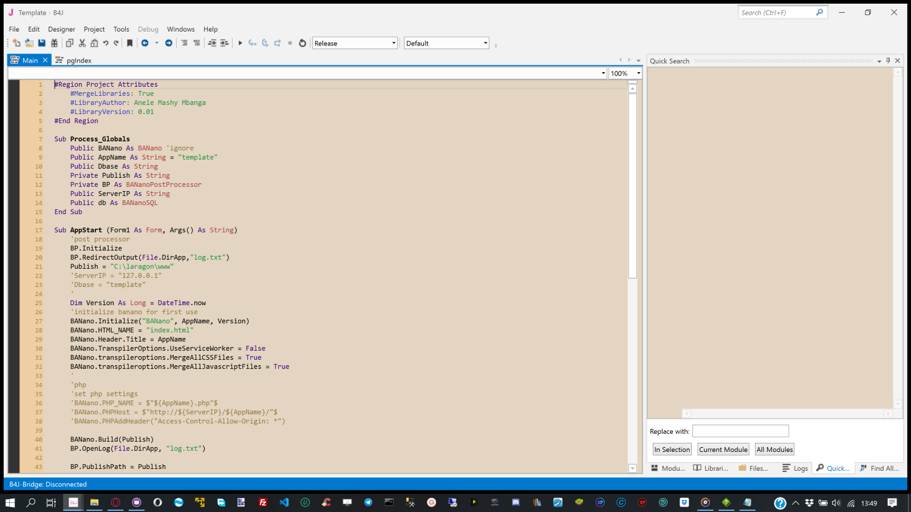
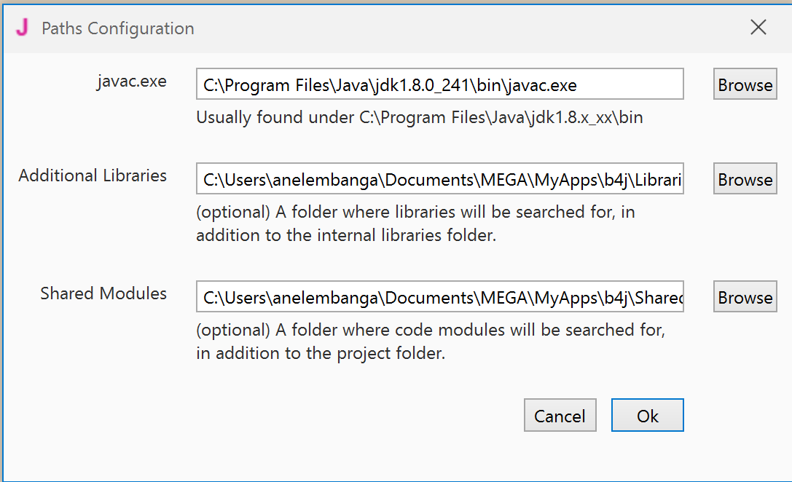
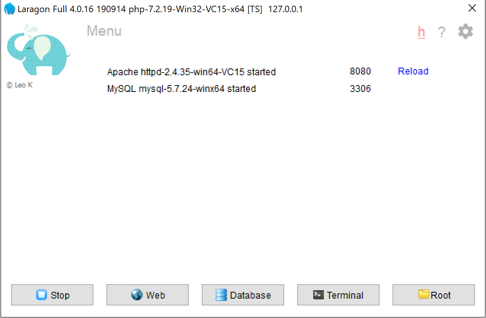
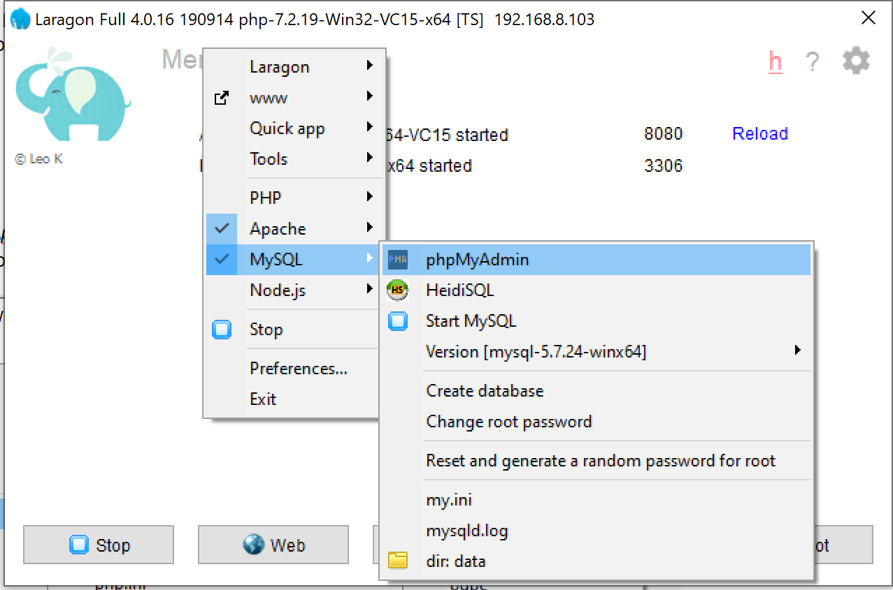
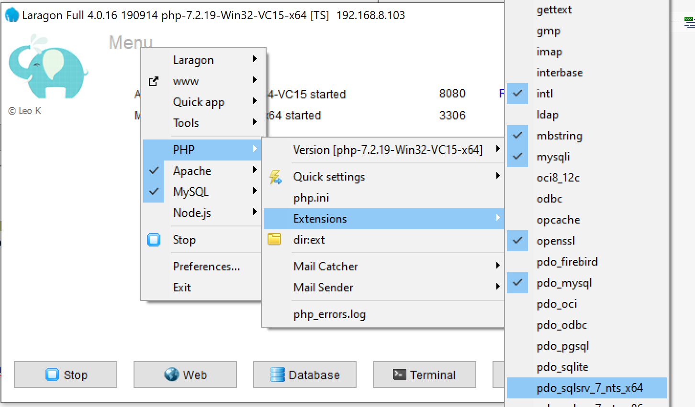
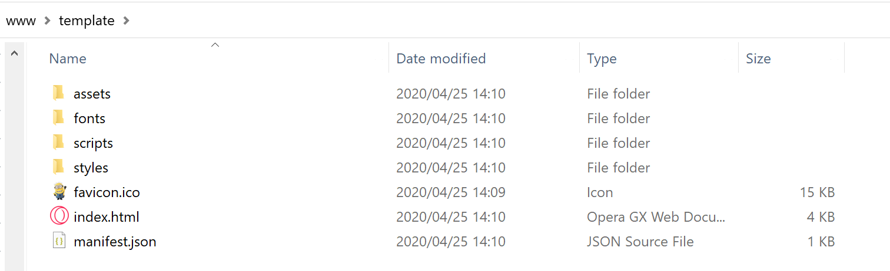

Setting up the IDE
Developing on Windows PC
At the time of writing B4J only runs on Windows PC.
To be able to develop BVAD3 apps, you will need the following: You can click on each to download
There are instructions on the website on how to install and configure B4J. With it you will need Java JDK 8+. Just follow the instructions on how to set up your IDE and get it ready.

Create a folder structure: You can skip this step if your IDE is already set up
1. Create a folder named B4X in your C: drive, and then create the respective sub folders
C:\B4X\B4J\Shared - we will call this folder "shared"
C:\B4X\B4J\Libraries - we will call this folder "external libraries"
C:\B4X\B4J\Workspace - we will call this "workspace"
- The shared folder will store all code modules that have sharable code
- The external libraries will store all libraries from others users e.g. BANano & BVAD3 library.
- The workspace will store your project folders, e.g. projects we will create with BVM
We have B4X master folder because we can create the same structure for B4A and or B4I IDEs.
Test the readiness of your IDE
To test the readiness of your IDE, we will do 3 things.
1. Start B4J, in the menu click Tools > Configure Paths. A screen like this will appear.
Figure 2

- Ensure that the specified paths point to the correct locations.
- Additional Libraries should point to your external libraries path you created before
- Shared Modules should point to the shared path you created before. You click Ok to save any changed details.
Once downloaded, copy the contents of the Library folder to your external libraries folder e.g.C:\B4X\B4J\Libraries This library comes with some code examples on the usage of BANano. I have also written a nice tutorial on how one can get started with BANano. That will help you with the basics and also further experience on how to use BANano. As an example, one of the things you will see when writing BVAD3 code is the BANanoEvent.
NB: I greatly recommend that you go through this tutorial so that at least you have some understanding of BANano and what it does.
Download the github repo and extract the contents to your working folder, e.g. C:\B4X\B4J\Workspace
Open the Library folders inside BVAD3, double click the BANanoVuetifyAD3.b4j file to open b4j. Run the project. This depends on #2 above. Close the project. Your library will be compiled.
The structure of the BVAD3 github repo.
1. Library - this contains the source code for the BVAD3 b4x library.
2. Demos - a collection of demo projects created with BVAD3
3. Templates - various BVAD3 templates
I am assuming you have briefed yourself about BANano (my tutorial and others) and now you are ready to explore BVAD3 code and its output. Going forward we will use our VB know how to create apps.
4. A webserver. I am using the laragon development web server for all my examples here. One can also use XAMPP
I am yet to test the USBWebServer.

MySQL Usage
- Laragon does not come installed with phpMyAdmin, thus, download phpMyAdmin
- Extract the folder to c:\laragon\etc\apps\phpMyAdmin
- The password is root.
Check that phpMyAdmin works

MSSQL Usage
- Extract the files to C:\laragon\bin\php\php-7.2.19-Win32-VC15-x64\ext. This is the php extensions folder
- Activate the nts (non-thread-safe option)

Internet Information Server
1. Install Web Platform Installer
Install IIS from WPI.
2.5. Install an FTP tool
I am using FileZilla to upload my BVM apps to the interweb. The output of your website, will be saved to the folder that you told banano to publish on.
This structure will follow this pattern.

Explaining the folders
1. assets - this stores all assets for the app e.g. images, json, and other files
2. fonts - (optional for storing font fies)
3. scripts - this folder has all your .js files
4. styles - this folder has all your .css files
Created with the Personal Edition of HelpNDoc: Create help files for the Qt Help Framework